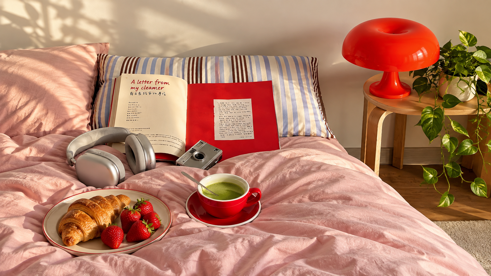

GRAPHIC DESIGN GRAPHIC DESIGN
Share
Close
YEAR
2026
CATEGORY
Graphic Design
ROLE
Designer
SCOPE
Visual Concept · Composition · Digital Image
Figma · Photoshop · Illustrator
GRAPHIC DESIGN
일상의 장면을 색과 이미지로 풀어낸 그래픽 작업입니다. 타이포그래피와 구성의 균형을 탐색하며 시각적 분위기를 만듭니다.
